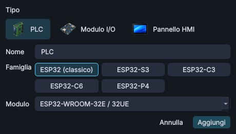
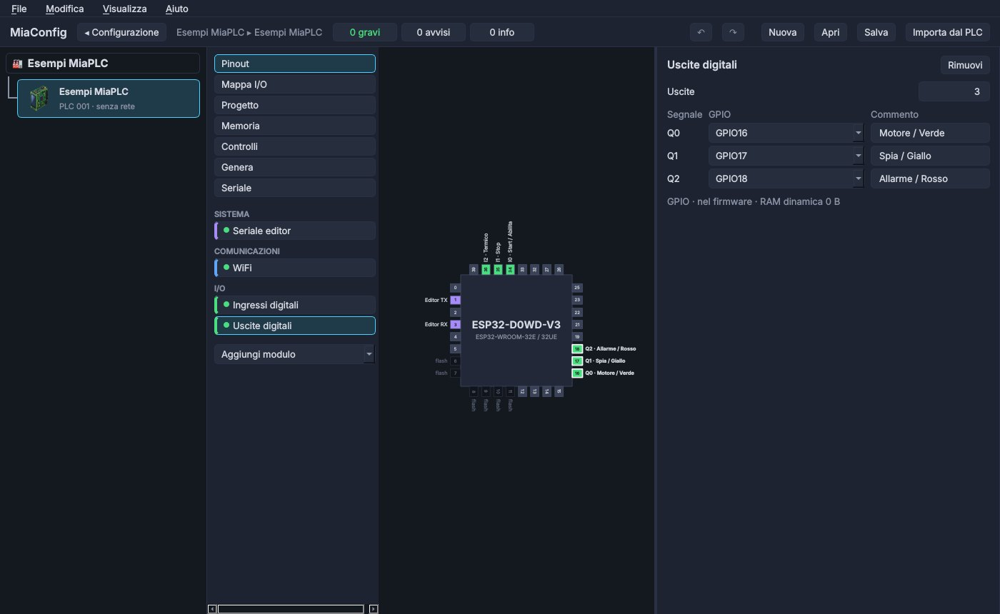
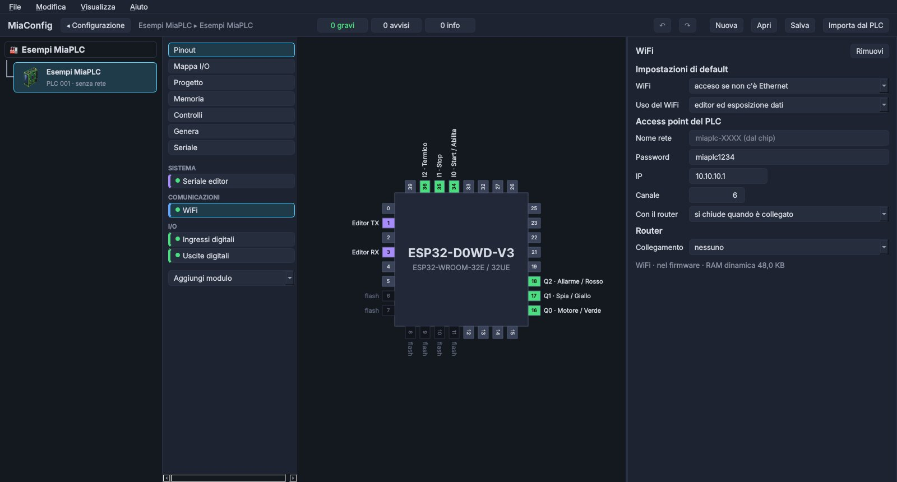
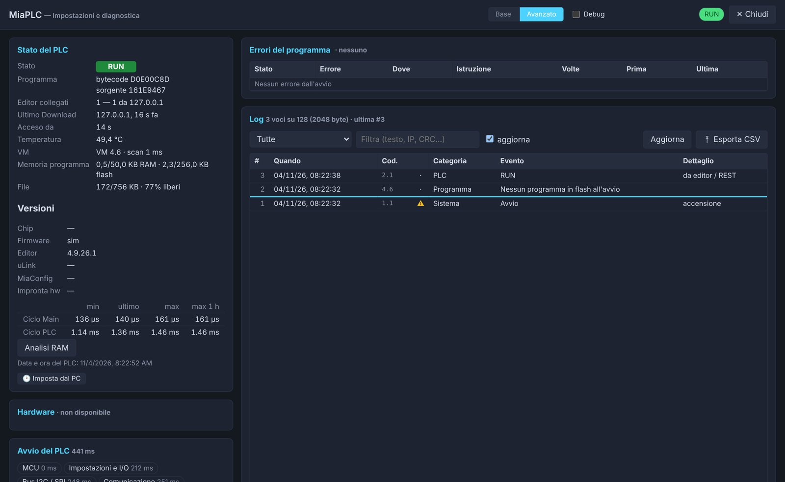

Cosa serve
| Cosa | Note |
|---|---|
| Scheda ESP32 DevKit con modulo ESP32-WROOM-32E (o 32D) | la più comune, si trova a pochi euro |
| Cavo USB dati | alcuni cavi caricano soltanto: con quelli il PC non vede la scheda |
| Breadboard e cavetti | |
| 3 pulsanti e 3 resistenze da 10 kΩ | Start / Abilita, Stop, Termico |
| 3 LED (verde, giallo, rosso) e 3 resistenze da 330 Ω | Motore / Verde, Spia / Giallo, Allarme / Rosso |
| Facoltativo: modulo relè a 2 canali, comando a 3,3 V | per sentire il clic della canzoncina |
| PC Windows, Linux o macOS con Python 3.10 o più recente | la prima compilazione scarica circa 1 GB (ESP-IDF e compilatori) |
Se vuoi saltare i passi da 2 a 6, scarica il progetto già pronto esp32-devkit-esempi.mia e aprilo in MiaConfig con Apri progetto.
1 · Avvia MiaConfig
I download di MiaConfig saranno disponibili a breve.
Su Windows fai doppio clic su avvia.bat: la prima volta prepara da solo il suo Python (serve internet), poi apre la finestra.
Su Linux e macOS segui il README. Non installa niente nel sistema: tutto resta nella sua cartella.
2 · Nuovo progetto
Nella pagina Nuovo progetto lascia PLC, scrivi un nome, scegli la famiglia ESP32 (classico) e il modulo ESP32-WROOM-32E / 32UE. Crea.

Il progetto parte già con la seriale per l'editor (GPIO 1 e 3), il WiFi, gli ingressi e le uscite digitali. A sinistra c'è l'elenco dei moduli, al centro il chip con i suoi pin, a destra le impostazioni del modulo scelto.
3 · Ingressi digitali
Clicca Ingressi digitali a sinistra e metti Ingressi = 3. MiaConfig sceglie da solo pin liberi e adatti:
I0 → GPIO34, I1 → GPIO35, I2 → GPIO36. Nella colonna Commento scrivi a cosa servono:
li ritrovi nel pinout e nella tabella dei punti dell'editor.

I0 nel ladder è il primo, qui GPIO34.Per cambiare un pin scegli un altro GPIO dalla lista: quelli non adatti (flash, avvio, già usati) sono segnalati.
4 · Uscite digitali
Uscite digitali → Uscite = 3: Q0 → GPIO16, Q1 → GPIO17, Q2 → GPIO18.

5 · WiFi
Con il WiFi la scheda fa da access point: il PC si collega direttamente a lei, senza router. Lascia i valori di default oppure cambia la password.
| Impostazione | Default |
|---|---|
| Nome rete | miaplc-XXXX (le ultime cifre vengono dal chip) |
| Password | miaplc1234 |
| IP del PLC | 10.10.10.1 |

6 · Controlla
Mappa I/O riassume ingressi e uscite con i loro pin. In alto i contatori gravi / avvisi / info devono avere 0 gravi:
con un errore grave il firmware non si compila, e Controlli dice cosa sistemare. Salva per tenere il progetto (.mia).

7 · Compila e carica
Collega la scheda al PC con il cavo USB e apri Genera.
- Premi ↻ Cerca e scegli la porta della scheda (su Windows
COMx, su Linux/dev/ttyUSB0). - Premi Carica: MiaConfig compila il firmware e lo scrive sulla scheda. La prima volta scarica ESP-IDF, i compilatori e il firmware MiaPLC: ci vuole un po', le volte dopo solo pochi minuti.

Il caricamento da USB cancella programma, impostazioni e file del PLC: va bene su una scheda nuova. Per aggiornare un PLC
già in uso scegli la sua voce «rete» nella lista delle porte: programma e impostazioni restano.
In alternativa: Compila firmware crea il pacchetto .miaplc.fw in uscita/, che si carica dall'editor
(Collegamento → Firmware).
8 · Cablaggio
Prima di collegare, stacca il cavo USB. L'ESP32 lavora a 3,3 V: niente 5 V sui pin.
| Segnale | Pin | Collegamento |
|---|---|---|
I0 Start / Abilita | GPIO34 | pulsante tra 3V3 e il pin; resistenza da 10 kΩ tra il pin e GND |
I1 Stop | GPIO35 | |
I2 Termico | GPIO36 (sulla scheda spesso «VP» o «SVP») | |
Q0 Motore / Verde | GPIO16 | pin → resistenza da 330 Ω → LED (gamba lunga) → LED (gamba corta) → GND |
Q1 Spia / Giallo | GPIO17 | |
Q2 Allarme / Rosso | GPIO18 |
- Perché la resistenza da 10 kΩ: GPIO34, 35 e 36 sono solo ingressi e non hanno la resistenza interna. Senza, il pin con il pulsante aperto «galleggia» e il PLC legge 0 e 1 a caso. Con la resistenza verso GND, a riposo legge 0 e premuto legge 1.
- Relè: per la canzoncina usa un modulo relè con il comando a 3,3 V su
Q0(GPIO16) eQ1(GPIO17), alimentato come dice il suo foglio. Mai la bobina di un relè direttamente su un pin. Molti moduli si accendono con il pin a 0 (comando «attivo basso»): in quel caso i relè fanno il contrario dei LED. - Arresto negli impianti veri: qui Stop è un pulsante normalmente aperto, come nel simulatore. Su una macchina vera l'arresto si cabla normalmente chiuso, così un filo rotto ferma il motore, e nel ladder diventa un contatto NO. Ricorda anche che MiaPLC non è un dispositivo di sicurezza: l'emergenza vera passa da circuiti e componenti di sicurezza.
9 · Apri l'editor della scheda
- Ricollega il cavo USB (o un alimentatore USB): la scheda parte.
- Dal PC collegati alla rete WiFi
miaplc-XXXXcon la passwordmiaplc1234. - Nel browser apri
http://10.10.10.1: è lo stesso editor del simulatore, ma ora parla con la scheda vera.
Apri la 🩺 Diagnostica per controllare che tutto sia a posto: stato del PLC, versioni, log degli eventi e tempi del ciclo.

10 · Carica l'esempio
- Scarica il file dell'esempio: marcia-arresto, semaforo o canzoncina. Oppure usa il progetto che hai creato con il primo manuale e salvato con 💾 Salva.
- Nell'editor della scheda: 📂 Apri e scegli il file.
- Download to cpu, conferma, poi RUN.
- Online e prova con i pulsanti veri: Start accende il LED verde (Q0), dopo 3 s il giallo (Q1); Stop lo spegne.
| Esempio | Ingressi usati | Uscite usate |
|---|---|---|
| Marcia e arresto | I0 Start, I1 Stop, I2 Termico | Q0 Motore, Q1 Spia, Q2 Allarme |
| Semaforo | I0 Abilita | Q0 Verde, Q1 Giallo, Q2 Rosso |
| La canzoncina dei relè | I0 da capo | Q0 e Q1 (relè) |
Il programma resta nella memoria della scheda: alla prossima accensione riparte da solo.
Se qualcosa non va
| Problema | Cosa controllare |
|---|---|
| MiaConfig non vede la porta | cavo USB dati; driver del convertitore USB della scheda (CP210x o CH340); un altro programma che tiene aperta la porta |
| Il caricamento non parte | alcune schede vogliono il tasto BOOT premuto all'inizio del caricamento |
Non trovo la rete miaplc-XXXX | la scheda è alimentata? Dopo il caricamento premi EN (reset) una volta |
| Un ingresso cambia da solo | manca la resistenza da 10 kΩ verso GND |
| Un LED non si accende | LED al contrario (gamba lunga verso il pin) o resistenza mancante; in Online guarda se la bobina è verde |
| Il Download dice «non collegati a nessun GPIO» | il programma usa un ingresso o un'uscita che in MiaConfig non hai creato: aumenta il numero e ricarica il firmware |
Altre domande: info@miaplc.it.